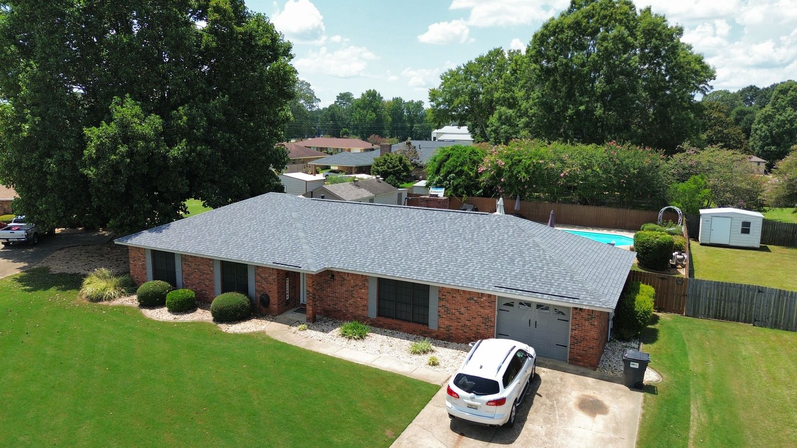

Roof Insurance Claim Help in Alabama
Storm or hail damage? Precision Roofing Alabama works directly with your adjuster, documenting the damage and guiding you through the claim so you get the coverage you're owed.
We Carry the Load.
You Keep Control.
Dealing with an insurance company after a storm is stressful and confusing. We take that weight off your shoulders, inspecting your roof, documenting every bit of damage, and meeting your adjuster on the roof so nothing legitimate gets missed. The claim stays yours, and you stay in control of every decision.
Our team knows what carriers look for. We provide detailed photo documentation and a clear scope of work, then meet your adjuster on-site to make sure nothing legitimate gets missed or undervalued.
From the first inspection to the final installation, we keep the process smooth, fair, and stress-free for homeowners across Montgomery, Birmingham, Huntsville, Auburn-Opelika, and Baldwin County.

The Claim Process, Step by Step
Free Damage Inspection
We inspect the full roof system and photograph every mark the storm left, before you ever have to call your insurer.
You File, We Support
If the damage justifies a claim, you file with our documentation in hand. We're on the phone with you if you want us there.
Adjuster Meeting
We meet your adjuster on the roof, walk them through the damage, and make sure nothing gets missed or undervalued.
Roof Restored
Once approved, we complete the repair or replacement to manufacturer spec and hand you the photos and warranty.
Documentation Wins Claims
Claims don't usually get underpaid because adjusters are unfair. They get underpaid because damage goes undocumented. Hail bruising that's invisible from the ground, wind-creased shingles that look fine until you lift them, flashing damage hidden behind gutters: if it isn't photographed and written into the scope, it doesn't get paid.
Our inspection produces a photo record of every slope, penetration, and accessory: roof, vents, flashing, gutters, screens, and siding, plus a written scope of work in the format carriers expect. That's what we bring to the adjuster meeting, and it's why our homeowners' claims so rarely come back short.
Not sure whether what you're seeing is claim-worthy? Start with our storm & hail damage guide or just give us a call at (334) 318-7255. The inspection is free and the answer is honest either way.
How We Help While Staying Inside Alabama Law
Here is something a lot of roofers will not tell you: in Alabama, a roofing contractor cannot legally negotiate your insurance claim for you. The claim belongs to you. A contractor who promises to "fight your insurance company" or "get your claim approved" is promising something the law does not let a roofer do, and that is exactly the kind of talk that gives storm work a bad name.
So here is what we actually do, and it is plenty. We inspect and photograph every bit of damage before you ever call your carrier. We meet your adjuster on the roof and point out what we found, so the decision gets made on complete evidence. We explain the estimate line by line in plain English so you know exactly what is covered. And once the scope is approved, we build the roof to that scope and document the finished work. If legitimate damage turns up mid-job, we document that too so you can request the supplement.
You make every decision. You never sign your claim over to us, and you should not sign it over to anybody. If a storm chaser has told you otherwise, come get a free second look from a local, licensed Alabama contractor and hear it straight.
Insurance Claim Questions, Answered
What does your insurance claim help cost me?
Nothing extra. The inspection and documentation are free, and our job is quoted to the insurance scope of work. You typically pay only your policy deductible. Your policy sets that, not us.
Should I call my insurance company or a roofer first?
Get the roof inspected first. If the damage doesn't justify a claim, you avoid filing one unnecessarily. If it does, you'll file with photo documentation already in hand, which makes the whole process smoother and harder to undervalue.
What if my claim gets denied or lowballed?
It happens, especially without good documentation. We provide detailed photos and a clear scope of work, meet the adjuster in person, and if something legitimate was missed we help you request a re-inspection with the evidence to back it up.
How long do I have to file a storm damage claim in Alabama?
Policies vary, but most give you a limited window, often one year from the storm date and sometimes less. Don't wait: damage gets harder to attribute to a specific storm as time passes. A free inspection now establishes the record.
Can a roofer negotiate my insurance claim in Alabama?
No, and be wary of anyone who says they can. Alabama law does not allow a roofing contractor to negotiate a claim on a homeowner's behalf. What we legally can do, and do well, is document the damage, meet your adjuster on the roof, explain the estimate in plain English, and build to the approved scope. The claim stays in your hands the whole way.
Can you give me a second opinion after a denied claim or a storm chaser's verdict?
Gladly. If your claim came back denied or another roofer told you the whole roof needs replacing, we will take a free, honest look and tell you what we actually see, with photos to back it up. Sometimes the answer is that a repair will do. Sometimes there is documented damage worth a re-inspection. Either way you get a straight answer from a local company that will still be here next year.
Storm Damage? Let's Talk.
Schedule your free roof inspection today. We'll document the damage and walk you through every step of the claim. No obligation, no pressure.
Schedule Free Inspection